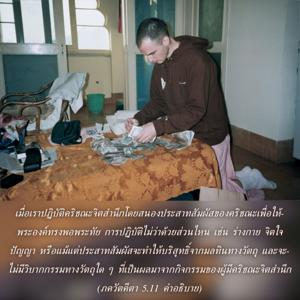

โยคีผู้สละความยึดติด ปฏิบัติด้วยร่างกาย จิตใจ ปัญญา และแม้แต่ด้วยประสาทสัมผัสเพียงเพื่อจุดมุ่งหมายแห่งความบริสุทธิ์เท่านั้น

เมื่อเราปฏิบัติกฺฤษฺณจิตสำนึกโดยสนองประสาทสัมผัสขององค์กฺฤษฺณเพื่อให้พระองค์ทรงพอพระทัย การปฏิบัติไม่ว่าด้วยส่วนไหน เช่น ร่างกาย จิตใจ ปัญญา หรือแม้แต่ประสาทสัมผัสจะทำให้บริสุทธิ์จากมลทินทางวัตถุ และจะไม่มีวิบากกรรมทางวัตถุใดๆที่เป็นผลมาจากกิจกรรมของผู้มีกฺฤษฺณจิตสำนึก ฉะนั้นกิจกรรมบริสุทธิ์โดยทั่วไปเรียกว่า สทฺ-อาจาร สามารถปฏิบัติได้โดยง่ายด้วยการปฏิบัติในกฺฤษฺณจิตสำนึก ศฺรี รูป โคสฺวามี ใน ภกฺติ-รสามฺฤต-สินฺธุ (1.2.187) ได้อธิบายไว้ ดังนี้
อีหา ยสฺย หเรรฺ ทาเสฺย
กรฺมณา มนสา คิรา
นิขิลาสฺวฺ อปฺยฺ อวสฺถาสุ
ชีวนฺ-มุกฺตห์ ส อุจฺยเต
“บุคคลผู้ปฏิบัติในกฺฤษฺณจิตสำนึก (หรืออีกนัยหนึ่งรับใช้องค์กฺฤษฺณ) ด้วยร่างกาย จิตใจ ปัญญา และคำพูดเป็นผู้หลุดพ้นแม้อยู่ในโลกวัตถุ ถึงแม้ท่านอาจปฏิบัติสิ่งที่เรียกว่ากิจกรรมทางวัตถุมากมาย” แต่ไม่มีอหังการเพราะท่านไม่เชื่อว่าตัวท่านคือร่างวัตถุนี้ หรือว่าตัวท่านเป็นเจ้าของร่างวัตถุ รู้ดีว่าตัวท่านไม่ใช่ร่างกายนี้และร่างกายนี้ไม่ใช่เป็นของท่าน ตัวท่านเองเป็นขององค์กฺฤษฺณ และร่างกายก็เช่นกันเป็นขององค์กฺฤษฺณ เมื่อนำทุกสิ่งทุกอย่างที่ผลิตโดยร่างกาย จิตใจ ปัญญา คำพูด ชีวิต ทรัพย์สมบัติ ฯลฯ และอะไรก็แล้วแต่ที่ท่านอาจเป็นเจ้าของจะนำมารับใช้องค์กฺฤษฺณ เช่นนี้ท่านจะประสานกับองค์กฺฤษฺณทันทีโดยเป็นหนึ่งเดียวกับองค์กฺฤษฺณ และปราศจากอหังการที่จะนำท่านให้เชื่อว่าตัวท่านคือร่างกาย เป็นต้น นี่คือระดับสมบูรณ์แห่งกฺฤษฺณจิตสำนึก